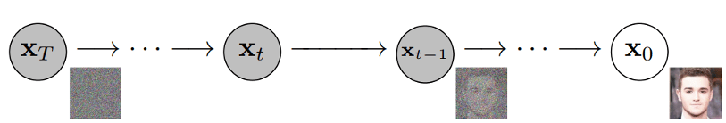
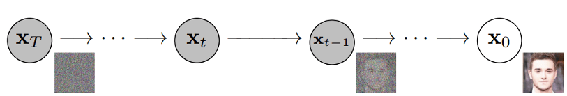
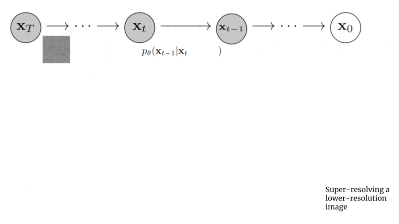
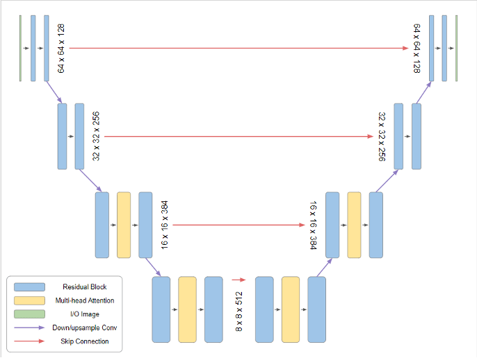
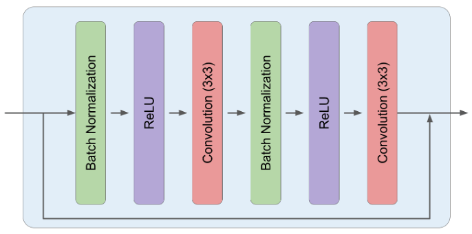

Imagen
Contents
Imagen#

Text-to-image model#

High-performing text-to-image models will necessarily be able to combine unrelated concepts and objects in semantically plausible ways.
Challenges
capturing spatial relationships
understanding cardinality
properly interpreting how words in the description relate to one another
”A brain riding a rocketship heading towards the moon”
How Imagen Works: A Bird’s-Eye View#
The caption is input into a
text encoder. This encoder converts the textual caption to a numerical representation thatencapsulates the semantic information within the text.An image-generation model creates an image by starting with noise and slowly transforming it into an output image. To guide this process, the image-generation model receives the text encoding as an input, which has the effect of
telling the model what is in the captionso it can create a corresponding image. The output is a small image that reflects visually the caption we input to the text encoder!The small image is then passed into a
super-resolution model, which grows the image to a higher resolution. This model also takes the text encoding as input, which helps the model decide how to behave as it “fills in the gaps” of missing information that necessarily arise from quadrupling the size of our image. The result is amedium sized imageof what we want.Finally, this medium sized image is then passed into yet
another super-resolution model, which operates near-identically to the previous one, except this time it takes our medium sized image and grows it to ahigh-resolution image. The result is 1024 x 1024 pixel image that visually reflects the semantics within our caption.
Text Encoder#
The text encoder is critical to Imagen’s performance. It conditions all of Imagen’s other components and is responsible for encoding the textual caption in a useful way.
The text encoder in Imagen is a Transformer encoder.
Encoder ensures that the text encoding understands how the words within the caption relate to one another (by a method called “self-attention”). The English language encodes information via its syntactic structure that affects the semantic meaning of a given sentence. The text-encoder is frozen during training, meaning that it does not learn or change the way it creates the encodings. It is only used to generate encodings that are fed to the rest of the model, which is trained.
A lack of consideration for how words relate to one another could yield an extremely poor result:
Image Generator#
Imagen uses a Diffusion Model to generate an image.
Diffusion Models are a method of creating data that is similar to a set of training data. They train by destroying the training data through the addition of noise, and then learning to recover the data by reversing this noising process.
 

Caption Conditioning#

Image Super-Resolution#

How Imagen Works: A Deep Dive#
Text Encoder: T5#
The text encoder in Imagen is the encoder network of T5 (Text-to-Text Transfer Transformer), a language model released by Google in 2019.
T5 is intended to be finetuned for any NLP task that can be cast in this text-to-text manner.
Some other text-to-image models like DALL-E 2 use text-encoders which are trained on image-caption pairs and an associated objective that is explicitly designed for the purpose of linking textual and visual representations of the same semantic concept.
The central intuition in using T5 is that extremely large language models, by virtue of their sheer size alone, may still learn useful representations despite the fact that they are not explicitly trained with any text/image task in mind.
“whether or not a massive language model trained on a massive dataset independent of the task of image generation is a worthwhile trade-off for a non-specialized text encoder.”
Image Generator: Network Architecture
A Diffusion Model is sort of a “metamodel” framework that tells us how to use a neural model to denoise images.
U-Net architecture by Nichol and Dhariwa.

Image Generator: Network Architecture#
Each residual block is composed of two sub-blocks, and each of these sub-blocks is composed of a Batch Normalization, ReLU, and 3x3 Convolution in sequence.

Timestep Conditioning#
In Imagen, the same denoising U-Net is used at every timestep.
We must therefore devise a way to inject timestep information into the model (i.e. condition on the timestep).
The Imagen authors utilize a technique introduced by the original Transformer paper called positional encoding.

A unique timestep encoding vector is generated for each timestep (corresponding to “word position” in the original positional embedding implementation).
At different resolutions in the U-Net, this vector is projected to having c components, where c is the number of channels in the U-Net at that resolution.
After projection, each component of the vector is added to the corresponding channel (across its height and width) in the image.

Caption Conditioning#
First, the output vectors from the T5 text encoder are pooled and added into the timestep embedding from above.
Next, the model is conditioned on the entire encoding sequence by adding cross attention over the text embeddings at several resolutions. The cross attention is implemented by concatenating the text embedding sequence to the key-value pairs of each self-attention layer.

Classifier-Free Guidance#
Classifier-Free Guidance is a method of increasing the image fidelity of a Diffusion Model at the cost of image diversity.
Classifier Guidance is a method for trading off the fidelity and diversity of images generated by a Diffusion Model.
The theoretical cost of Classifier Guidance method is diversity, because images will be encouraged to have features that are frequently observed for the given class.
The practical costs of the method are
needing to train a classifier in addition to the diffusion model
poor image quality when the conditional term is scaled too high (too high of a “guidance weight”).
Classifier-Free Guidance works by training a Diffusion Model to be both conditional and unconditional at the same time.
the Diffusion Model is cast as a conditional model and is trained with the conditioning information randomly dropped out a small fraction of the time (by replacing the conditional information with a NULL value).
To use the model in an unconditional way, the NULL value is simply provided as the “conditional information” to the model.
Classifier-Free guidance works loosely by interpolating between the unconditional and conditional gradients during inference.
By magnifying the effect of the conditional gradient (i.e. making the “guidance weight” greater than 1), better samples can be obtained.
GLIDE images generated by the prompt “a religious place”
Large Guidance Weight Samplers#
Imagen depends critically on classifier-free guidance for effective text conditioning.
Classifier-Free Guidance is a very powerful way to improve the caption alignment of generated images, but it has been previously observed that extremely high guidance weights damage fidelity by yielding saturated and unnatural images.
This phenomenon arises from a train-test mismatch.
The pixel values for the training data are scaled to the range [-1, 1], but high guidance weights cause the network outputs to exceed these bounds at given timestep.
High guidance weights are found to be crucial for achieving State-of-the-Art image quality, so avoiding the problem by simply using lower guidance weights is not an option.
Static Thresholding#
The pixel values at each timestep are clipped to the range [-1, 1]
Dynamic Thresholding#
A certain percentile absolute pixel value is chosen.
At each timestep, if that percentile value s exceeds 1, then the pixel values are thresholded to [-s, s] and divided by s.

Comparison#
The effects of increasing the guidance weight for three models

Super-Resolution Models#
Diffusion Model (or “base model”) outputs 64x64 images.
Imagen uses two conditional diffusion models to bring the image up to 1024x1024 resolution.
The Small-to-Medium (STM) super-resolution model “takes in” (is conditioned on) the 64x64 image generated by the base model and super-resolves it to a 256x256 image.
The STM model is yet another diffusion model, and is also conditioned on the caption encoding in addition to the low-resolution image.
The Medium-to-Large (MTL) super-resolution model super-resolves the 256x256 image generated by the STM model to a 1024x1204 image.
The architecture is generally similar to the STM model except that the self-attention layers are removed. Since there are no self-attention layers in this model, explicit cross-attention layers are added to attend over the text embeddings in contrast to the base and STM models.
Robust Cascaded Diffusion Models#
Imagen uses noise conditioning augmentation in the super-resolution models in order to make them aware of the amount of noise added.
This conditioning improves sample quality and the ability of the models to handle artifacts resulting from the lower resolution models.
The authors find this approach to be critical for generating high fidelity images.

Results and Analysis#
Quantitative
COCO is a dataset used to evaluate text-to-image models, with FID used to measure image fidelity and CLIP used to measure image-caption alignment.
The authors find that Imagen achieves a State-of-the-Art zero-shot FID of 7.27 on COCO, outperforming DALL-E 2 and even models that were trained on COCO.
Qualitative
Quality: “Which image is more photorealistic (looks more real)?”
Imagen achieves a preference rate of 39.2% for photorealism.
Caption Similarity: “Does the caption accurately describe the above image?”
Imagen is on-par with original reference images for caption similarity.
DrawBench
a comprehensive and challenging set of prompts that is intended to support the evaluation and comparison of text-to-image models.

Why is Imagen Better than DALL-E 2?#
DALL-E 2 uses a contrastive objective to determine how related a text encoding is to an image (essentially CLIP). The text and image encoders tune their parameters such that the cosine similarities of like caption-image pairs are maximized, while the cosine similarities of differing caption-image pairs are minimized.
Sheer Size
The effect of scaling up the text encoder is shockingly high, and that of scaling up the U-Net is shockingly low.
The Image Encoder Crutch
During CLIP training, both the text encoder and image encoder are tuned to satisfy the demands of the objective function.
The image encoder in CLIP learns to produce richer encodings more quickly than the text encoder, adapting to the relatively lower performance of the text encoder.
Similar Concepts in Different Data Points
The potential shortcoming of the CLIP text-encoding method is that the blanket objective of maximizing the cosine similarity of corresponding caption-image pairs while minimizing that of differing ones does not account for similar concepts in distinct data points.
Conclusion#
Scaling the text encoder is very effective
Scaling the text encoder is more important than U-Net size
Dynamic thresholding is critical
Noise conditioning augmentation in the super-resolution models is critical
Text conditioning via cross attention is critical
Efficient U-Net is critical